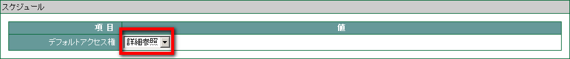
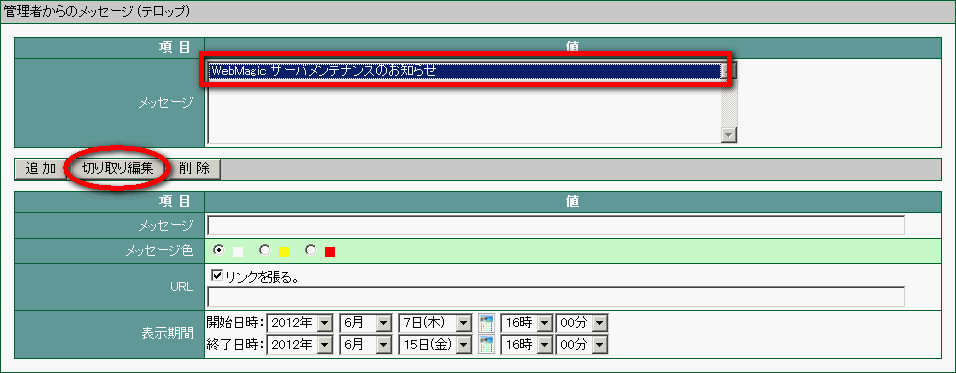
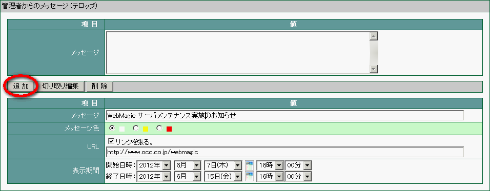

24. その他¶
その他では、スケジュールのアクセス権の変更やテロップ表示の設定を行うことができます。
24.1. スケジュールのアクセス権の初期値を変更する¶
メニューの
 をクリックします。
をクリックします。 をクリックします。
をクリックします。デフォルトアクセス権を設定し、 適用 をクリックします。

<アクセス権の説明>
| 権限無し | スケジュールにアクセスできません。 |
| 一覧参照 | 一つ一つのスケジュールの内容は閲覧できませんが、一日単位や週間・月間単位の一覧は閲覧できます。（登録はできません） |
| 詳細参照 | 一つ一つのスケジュールの内容まで閲覧できます。（登録はできません） |
| 作成 | スケジュールを登録することができます。 |
Note
値を規定値に戻したい場合は、 規定値に戻す をクリックします。
24.2. アドレス帳の共有グループ作成権の設定¶
アドレス帳の [共有] グループの登録設定に関する作成権の設定が行えます。

24.3. テロップ表示の設定¶
管理者からすべてのユーザーに対して、テロップ表示にてメッセージを登録することができます。
メニューの
をクリックします。- をクリックします。
管理者からのメッセージを作成します。下段の [メッセージ] を入力し、表示する文字の色を設定します。リンク先がある場合は、 [リンクを張る] にチェックし、URL を入力します。表示期間を設定します。
追加 をクリックします。

上段の 「メッセージ」 枠内に、メッセージタイトルが登録されたことを確認します。
適用 をクリックします。
24.4. 登録したテロップ表示の設定を変更する¶
メニューの
をクリックします。- をクリックします。
設定を変更する 「メッセージ」 のタイトルを選択し、 切り取り編集 をクリックします。

メッセージの詳細が下段に表示されたことを確認し、内容を変更して 追加 をクリックします。

適用 をクリックします。